La vidéo de *Pursuing AI* intitulée « GPT 5.2, GEMINI 3, Opus 4.5 et GLM 4.7 🎄🎁 » explore de manière ludique et comparative le potentiel des modèles de langage de pointe (ou de nouvelle génération) pour concevoir des applications web interactives de Noël. À travers trois cas d'usage précis — une carte romantique pour sa petite amie, une farce effrayante pour son meilleur ami et l'affichage d'un message personnalisé sur le Burj Khalifa —, le créateur teste la capacité de ces intelligences artificielles à coder, itérer et produire des interfaces web fonctionnelles uniquement à partir de descriptions textuelles.
La méthode repose sur une approche itérative rigoureuse : chaque modèle est soumis à un prompt initial, puis affiné par des instructions correctives successives pour corriger les bugs d'affichage, ajuster les ambiances sonores ou perfectionner le design visuel. L'expérience montre que si aucun modèle ne parvient à un résultat parfait du premier coup, les performances varient grandement d'une IA à l'autre selon la complexité de la tâche, qu'il s'agisse de générer du code HTML autonome, de concevoir des animations fluides ou de respecter des contraintes structurelles précises.
Pour les créateurs de contenu et les développeurs, ce type de workflow illustre l'abaissement spectaculaire de la barrière technique : il est désormais possible de prototyper des expériences web immersives et personnalisées en quelques minutes sans écrire une seule ligne de code manuellement. Cette vidéo démontre que l'avenir de la création de contenu réside dans la co-création pilotée par le prompt, où la qualité du résultat dépend autant de la persévérance de l'utilisateur dans l'itération que de la puissance brute du modèle d'IA employé.
Hé, quelqu'un m'a envoyé un cadeau. Ouvrons-le. Aujourd'hui c'est le réveillon de Noël, mais ce n'est pas un réveillon de Noël normal. Nous vivons à l'ère de l'IA, et cette année, l'IA est partout. De nouveaux modèles, de nouveaux outils, presque chaque semaine.
Interface & Outils : Interface web interactive avec animations graphiques, moteur de recherche de date et interface de modélisation 3D/voxel avec commentaires textuels.
Contenu textuel & Code : Texte affiché : "Open Gift", "*Pls Low The Volume*", "Christmas Eve › Date", "Wed, Dec 24, 2025", et commentaires de code textuels sur l'ajout de hamsters voxélisés et animés.
Action / Démonstration : Présentation d'une animation d'ouverture de cadeau interactif, vérification de la date de Noël 2025, puis affichage d'un modèle 3D interactif d'un arbre en voxels.
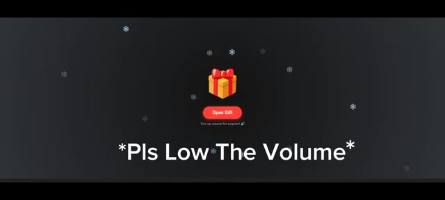
🔍 Agrandir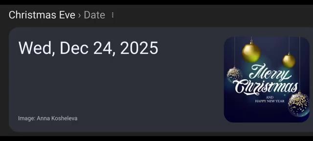
🔍 Agrandir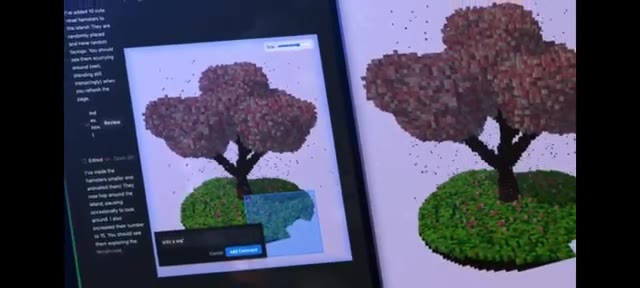
🔍 AgrandirFranchement, on a l'impression qu'il pleut de l'IA cette année. Et voici la partie passionnante. Tous ces outils d'IA peuvent réellement rendre notre Noël plus amusant, plus créatif et plus impressionnant. Alors j'ai creusé le sujet. J'ai fait des recherches sur des manières folles et incroyables d'utiliser l'IA ce Noël. C'est Pursuing AI, et vous regardez The Research Report.
Interface & Outils : Présentation face caméra et animations graphiques thématiques sans partage d'écran logiciel.
Contenu textuel & Code : Animations graphiques illustrant le sujet de l'intelligence artificielle et de Noël, incluant le logo "The Research Report" avec un cerveau cybernétique et une lettre de vœux.
Action / Démonstration : Affichage d'animations de transition et d'illustrations visuelles pour accompagner la voix off du créateur.
Tout d'abord, j'ai cherché comment impressionner votre petite amie ce Noël, alors j'ai créé une petite application web. Lorsque votre petite amie l'ouvre, un Père Noël apparaît à l'écran avec une animation fluide et magnifique. Ensuite, le Père Noël lui donne une lettre, mais ce n'est pas une lettre normale. À l'intérieur de la lettre se trouve votre propre message, écrit par vous, pour elle.
Interface & Outils : Écran de présentation de l'application web développée par le créateur.
Contenu textuel & Code : Texte à l'écran : "How To Impress Your Girlfriend" puis animation d'une lettre interactive.
Action / Démonstration : Le texte apparaît en typographie blanche simple sur fond noir, suivi d'une animation graphique d'enveloppe sur un fond sombre constellé.
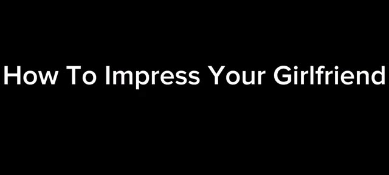
🔍 Agrandir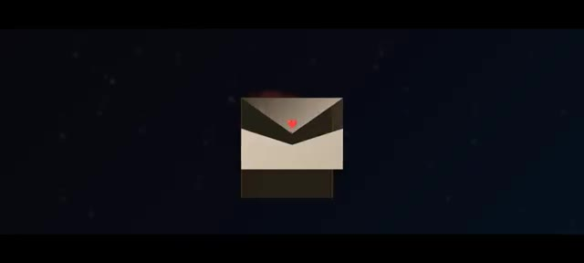
🔍 AgrandirDonc ça a l'air personnel, ça a l'air spécial. Passons maintenant au premier résultat. C'est le résultat de Gemini 3. D'abord, il génère ceci. Quand je clique sur ouvrir, un Père Noël apparaît, et une lettre pop-up apparaît. Ensuite, le message apparaît avec une animation. Mais voici le problème.
Interface & Outils : Démonstration vidéo d'un résultat généré par Gemini 3 avec des animations de Noël.
Contenu textuel & Code : Texte sur l'enveloppe et la lettre de vœux : vœux de joyeux Noël, message personnalisé et signature.
Action / Démonstration : Présentation du premier résultat généré par l'IA Gemini 3, montrant l'ouverture d'une enveloppe et l'apparition d'une animation du Père Noël avec un message.
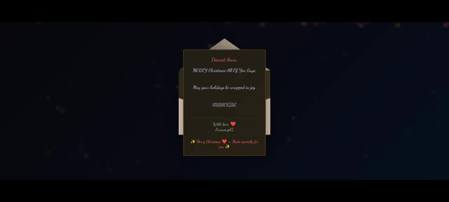
🔍 Agrandir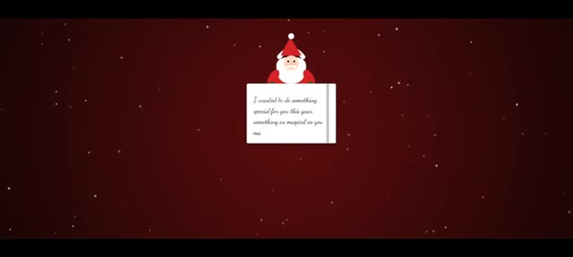
🔍 AgrandirJe ne lui ai donné aucun message. Le message à l'intérieur de la lettre a été écrit par le modèle lui-même. Voyons donc ce qu'il a écrit. Je voulais faire quelque chose de spécial pour toi cette année. Quelque chose d'aussi magique que tu rends ma vie chaque jour. Tu es mon cadeau préféré. Aujourd'hui et pour toujours. Que tes fêtes soient remplies de toute la joie et de l'amour que tu apportes dans mon cœur.
Interface & Outils : Animation graphique thématique de Noël.
Contenu textuel & Code : Texte manuscrit en anglais sur la lettre : « I wanted to do something special for you this year, something as magical as you make my life every single day. » avec une illustration du Père Noël en haut.
Action / Démonstration : Affichage à l'écran du contenu de la lettre générée par l'intelligence artificielle pendant que le créateur en fait la lecture.
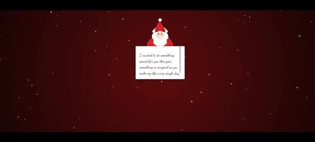
🔍 AgrandirJe t'aime plus que les mots ne peuvent le dire. Pour toujours ton ou ta. Et en bas, Joyeux Noël. Fait spécialement pour toi. C'est un message vraiment adorable. Et remarquez particulièrement l'arrière-plan. C'est vraiment romantique. Mais ce n'est pas ce que je veux. Je donne donc une autre consigne pour affiner le résultat.
Interface & Outils : Google Gemini
Contenu textuel & Code : Texte de l'application web de cadeau de Noël avec des instructions de téléchargement et un champ de saisie de message romantique.
Action / Démonstration : Le créateur montre le rendu visuel généré puis bascule sur l'interface de Google Gemini pour modifier le prompt.
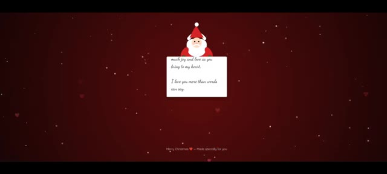
🔍 AgrandirEt le voilà. Maintenant c'est exactement ce que je veux. À l'intérieur de la boîte, je peux écrire mon propre message personnel, comme "Merry Christmas by pursuing AI". Je peux télécharger le lien et obtenir le fichier HTML. Le lien généré ne fonctionne pas. Il affiche une erreur car le lien n'existe pas.
Interface & Outils : Interface de Google Gemini et navigateur web affichant une application web interactive et une page d'erreur 404.
Contenu textuel & Code : Textes "Christmas Web App For Girlfriend", "Create Your Gift", "Write your romantic message below:", "MERRY Christmas By Pursuing AI", boutons "Download Gift File" et "Get Link", et message d'erreur Google "404. That's an error. The requested URL ... was not found on this server."
Action / Démonstration : Le créateur présente l'application web mise à jour, tape un message personnalisé dans la boîte de texte, puis montre l'erreur générée par le lien de partage défectueux.
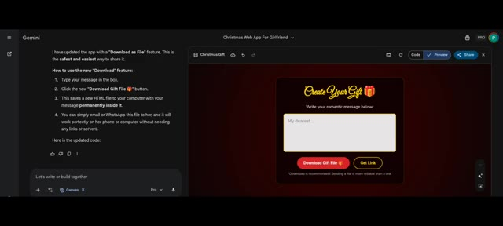
🔍 Agrandir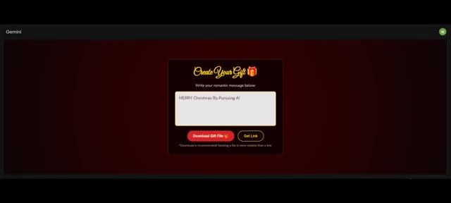
🔍 Agrandir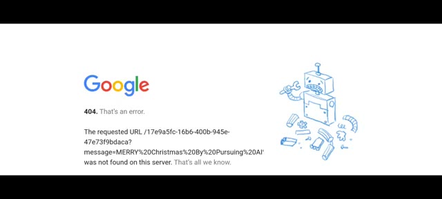
🔍 AgrandirMais le téléchargement fonctionne. Quand je clique sur télécharger, il télécharge le fichier HTML. Quand je l'ouvre, une boîte cadeau apparaît. Quand j'ouvre la boîte cadeau, un petit Père Noël apparaît avec une lettre. Et à l'intérieur de la lettre, mon message personnel apparaît. Exactement ce que je veux qu'il envoie. Des émojis en forme de cœur apparaissent avec une animation. Maintenant, remarquez le style de police. Il correspond parfaitement à l'ambiance romantique.
Interface & Outils : Page web interactive de création de messages-cadeaux personnalisés.
Contenu textuel & Code : Texte du message : "MERRY Christmas By Pursuing AI", boutons "Download Gift File" et "Get Link", avec un lien blob généré et un bouton "Copy Link". Sur l'image 2, la lettre affiche le texte stylisé "MERRY Christmas By Pursuing AI" avec des cœurs rouges animés.
Action / Démonstration : Démonstration du téléchargement et de l'affichage du fichier HTML généré avec le message personnalisé et les animations de cœurs.
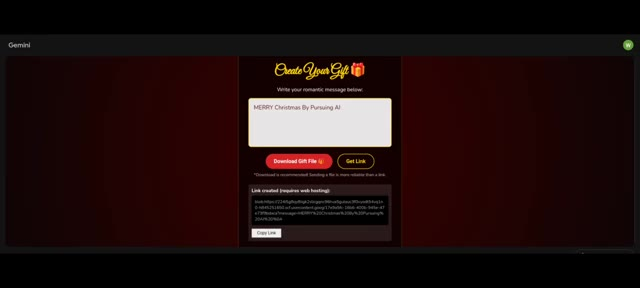
🔍 Agrandir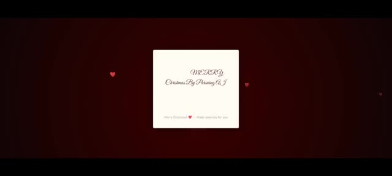
🔍 AgrandirJe pense que ta petite amie serait vraiment heureuse quand tu lui envoies un message personnel comme celui-ci. C'est vraiment incroyable comme Gemini a compris cela en seulement deux invites. Donc la prochaine méthode consiste à faire une farce à ton meilleur ami. Dans la méthode précédente, j'ai utilisé Gemini. Mais pour cette méthode, j'ai utilisé le nouveau modèle open source, GLM 4.7.
Interface & Outils : Interface vidéo et page web de présentation du modèle d'intelligence artificielle GLM-4.7.
Contenu textuel & Code : Texte affiché : "MERRY Christmas By Pursuing AI", "Merry Christmas — Made specialty for you", "Scary Prank To Your Best Friend", et "GLM-4.7: Advancing the Coding Capability" avec des détails sur les performances et fonctionnalités du modèle.
Action / Démonstration : Le créateur illustre ses propos en affichant une carte virtuelle de Noël, un titre thématique sur la farce, puis la documentation officielle du modèle de langage GLM-4.7.
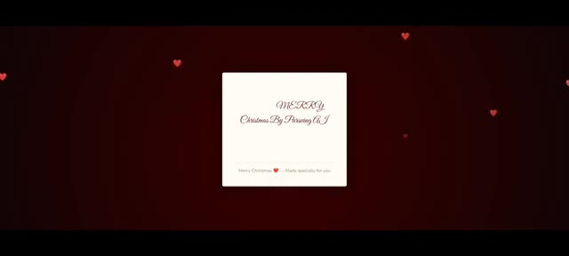
🔍 Agrandir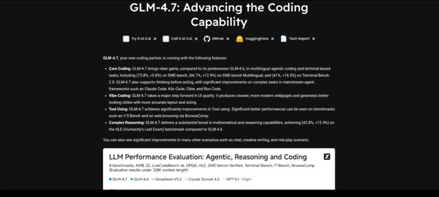
🔍 AgrandirCe modèle surpasse Gemini dans certains tests. S'il n'avait pas été capable de réussir ce test, j'avais prévu d'utiliser Opus 4.5 et ChatGPT 5.2. Maintenant, les exigences de la farce étaient simples. Créez un site web où, lorsque quelqu'un l'ouvre, une boîte-cadeau apparaît avec un joli arrière-plan. Sous la boîte, une option pour ouvrir la boîte-cadeau est disponible.
Interface & Outils : Diapositives et écrans de présentation textuels sur fond noir.
Contenu textuel & Code : Texte affiché : "LLM Performance Evaluation: Agentic, Reasoning and Coding", "Scary Prank Requirements", et la description des exigences : "Make a website where when anyone opens it, a gift box appears with a lovely background. Below the box, an "Open Gift Box" option is available."
Action / Démonstration : Affichage des graphiques de performance des modèles d'IA, suivi de l'apparition textuelle des critères de conception de la farce sur fond noir.
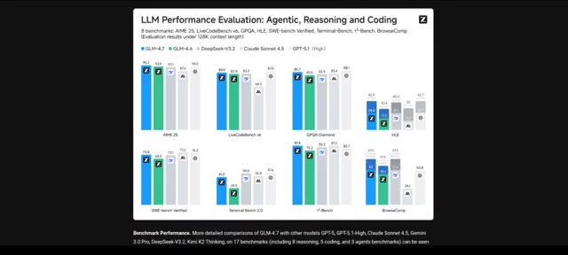
🔍 Agrandir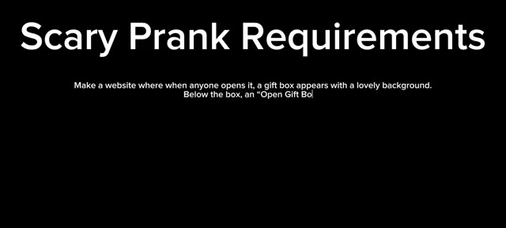
🔍 AgrandirLorsque l'on clique dessus, un visage de Père Noël effrayant apparaît soudainement avec des effets sonores terrifiants. Et à la fin, un message apparaît : "bonne année par Pursuing AI". Maintenant voici le résultat de GLM 4.7. D'abord, il a fait un arrière-plan normal. Une boîte cadeau apparaît, mais en ouvrant le cadeau, aucun Père Noël n'apparaît. Et le son n'est pas non plus très effrayant, alors j'ai relancé un prompt pour obtenir un meilleur résultat. C'est le deuxième résultat.
Interface & Outils : Interface de GLM-4.7 montrant une zone de chat textuel à gauche et un panneau de prévisualisation web à droite.
Contenu textuel & Code : Prompts textuels saisis par l'utilisateur demandant de créer une page web interactive avec une boîte cadeau, un effet effrayant de Père Noël et un message de fin d'année.
Action / Démonstration : Le créateur montre les différentes étapes de génération et d'itération du code d'une application web interactive via GLM-4.7.
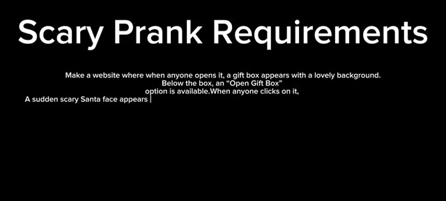
🔍 Agrandir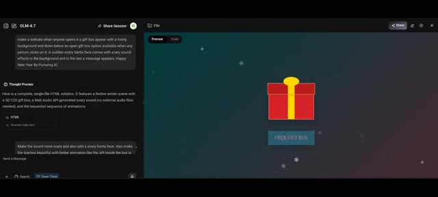
🔍 Agrandir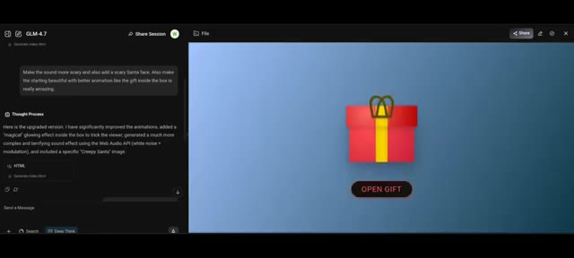
🔍 AgrandirÇa améliore le son, mais encore une fois le visage effrayant du Père Noël ne vient pas, alors je lui donne une dernière instruction. Et voici le résultat final. La première impression n'est pas très bonne. En ouvrant la boîte, le visage effrayant du Père Noël apparaît bien, avec du son, mais ce n'est pas ce à quoi je m'attendais. Ce n'est pas assez effrayant pour piéger vos amis. C'est donc le moment de passer à Opus 4.5, et voici le résultat. C'est bien meilleur que GLM 4.7. Ensuite, j'ai aussi essayé ChatGPT 5.2,
Interface & Outils : Interface web de GLM-4.7 avec un panneau de discussion à gauche et une fenêtre de prévisualisation (Preview/Code) à droite.
Contenu textuel & Code : Texte de prompt visible : 'Make the sound more scary and also add a scary Santa face. Also make the starting beautiful with better animation like the gift inside the box is really amazing.' Texte de fin : 'Happy New Year By Pursuing AI' et 'A Little Festive Surprise'.
Action / Démonstration : Le créateur présente les différents résultats de génération et de prévisualisation obtenus via l'outil GLM-4.7 suite à ses instructions correctives.
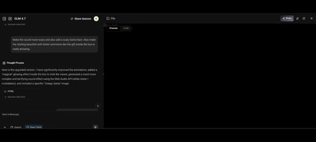
🔍 Agrandir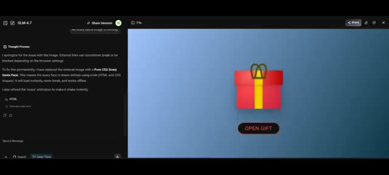
🔍 Agrandir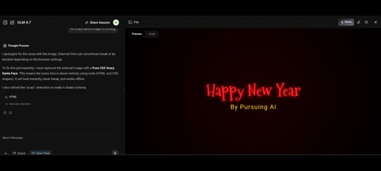
🔍 Agrandir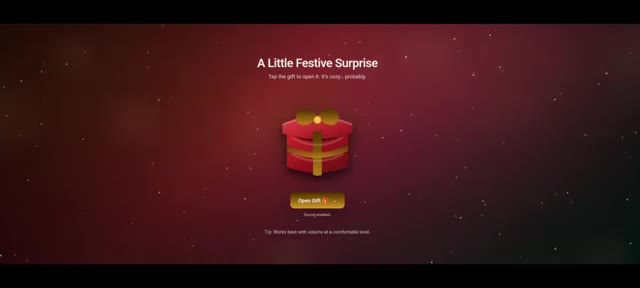
🔍 Agrandiret voici le résultat. Regardez la première impression. C'est vraiment impressionnant. Notez le message au-dessus de la boîte disant que c'est chaleureux. Cela donne probablement envie aux gens d'ouvrir la boîte. Cela a également ajouté un son d'ambiance dès la première impression. Le son est vraiment incroyable. Maintenant, ouvrons le cadeau. L'apparition soudaine du Père Noël est vraiment effrayante. C'est exactement ce que je voulais.
Interface & Outils : Page web interactive de surprise de Noël animée.
Contenu textuel & Code : Textes visibles : "A Little Festive Surprise", "Tap the gift to open it. It's cozy... probably.", "Open Gift", "Sound enabled", "Tip: Works best with volume at a comfortable level."
Action / Démonstration : Le créateur présente l'interface interactive de la boîte cadeau, clique pour l'ouvrir et montre l'animation surprise avec effet sonore.
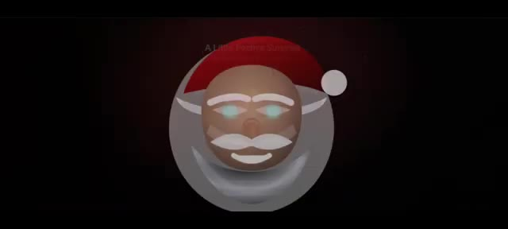
🔍 AgrandirIncroyable ! Nous avons essayé tous les outils, sauf Gemini. J'ai donc réessayé Gemini, et voici le résultat de Gemini. Ouvrons la boîte. C'est bien, mais ce n'est toujours pas aussi bon que le résultat de ChatGPT. Maintenant, après la farce effrayante, vous devriez envoyer le nom de votre ami sur le plus grand bâtiment du monde, le Burj Khalifa.
Interface & Outils : Interface web interactive avec un design festif (fond rouge et étoiles scintillantes).
Contenu textuel & Code : Texte affiché : "A Little Festive Surprise", "Tap the gift to open it, it's cozy... probably.", "Open Gift", "Sound enabled", "Tip: Works best with volume at a comfortable level" sur la première image ; et "World's Tallest Building" sur la deuxième.
Action / Démonstration : Présentation d'une interface interactive avec un cadeau virtuel à ouvrir, suivie d'une transition textuelle annonçant le plus haut bâtiment du monde.
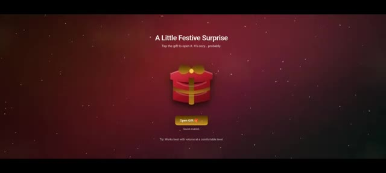
🔍 Agrandir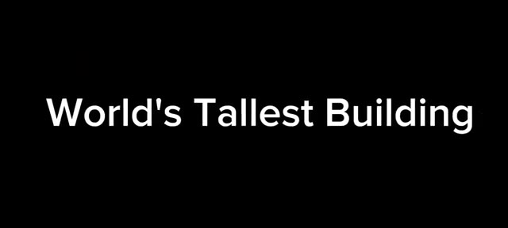
🔍 AgrandirEt voici le résultat de GLM 4.7. Le bouton se déplace sur l'écran. Il y a une zone de nom où je peux mettre le nom de mon ami. Mettons-le. Je mets des abonnés. Je clique sur créer. La musique commence. Du texte apparaît avec une animation. La musique de fond rend le tout incroyable. À la fin, une fenêtre pop-up apparaît disant, Je vous souhaite un très joyeux Noël.
Interface & Outils : Interface web interactive générée par GLM 4.7 sur le thème de Noël.
Contenu textuel & Code : Texte 'Christmas Magic', 'Enter your friend\'s name', bouton 'Create Christmas Surprise', et le message final 'Merry Christmas! Wishing you a very Merry Christmas from your best friend'.
Action / Démonstration : L'utilisateur saisit un nom dans le champ prévu, clique sur le bouton de création, puis la vidéo animée se lance avec de la musique jusqu'à afficher la fenêtre pop-up de vœux finale.
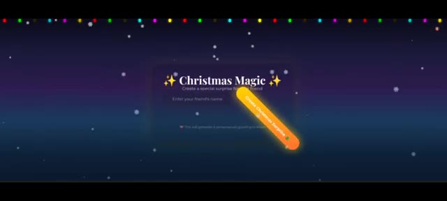
🔍 Agrandir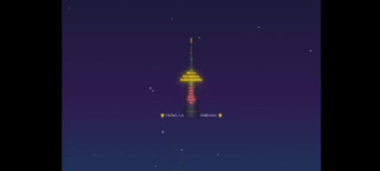
🔍 Agrandir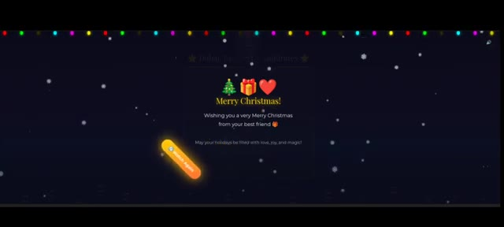
🔍 AgrandirTu es mon meilleur ami. Nous venons d'atteindre 200 abonnés. Veux-tu être mon abonné ? Commente ta décision dans les commentaires. Maintenant voici le résultat de Gemini. Mettons le nom de l'ami. C'est incroyable.
Interface & Outils : Présentation face caméra / capture de la chaîne YouTube sans démonstration active de logiciel de création d'IA.
Contenu textuel & Code : Affichage de la page d'accueil de la chaîne YouTube "Pursuing AI" avec des éléments graphiques de Noël et des miniatures de vidéos.
Action / Démonstration : Le créateur montre la chaîne YouTube pour célébrer l'atteinte des 200 abonnés.
Remarquez la musique, comme elle est bonne. Mais il y a une erreur. Le bâtiment ne ressemble pas au Burj Khalifa. C'est quand même vraiment impressionnant. Ensuite, c'est le résultat de ChatGPT 5.2. J'ai mis le nom. Il n'y a pas de musique de fond, juste un bâtiment droit avec du texte dessus. Pas aussi bien que le modèle précédent. Et enfin, c'est Opus 4.5. Le thème a l'air incroyable. Remarquez les ampoules colorées en haut et l'animation de neige. Mettons le nom et cliquons sur créer. Pas de musique de fond, mais la structure du bâtiment a l'air vraiment bien par rapport aux autres.
Interface & Outils : Application web interactive de génération de cartes de vœux ou de messages festifs personnalisés.
Contenu textuel & Code : Texte affiché : 'Merry Christmas', 'Create a magical surprise for your friend', 'Enter your friend\'s name', et un bouton rouge 'Create Christmas Surprise 🎄'. Sur l'image 1 : 'HAPPY HOLIDAYS', 'Best wishes for you, SUBSCRIBERS', et un bouton rouge 'Send Gift to SUBSCRIBERS'.
Action / Démonstration : Visualisation et démonstration des résultats de génération de différents modèles (notamment Opus 4.5 et d'autres) avec les éléments visuels de Noël, les ampoules colorées et les animations de neige.
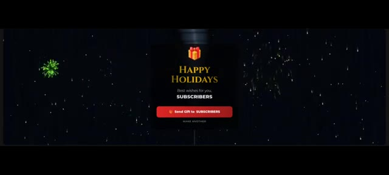
🔍 Agrandir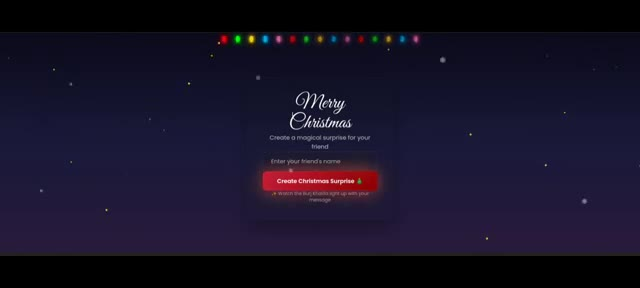
🔍 Agrandirdes modèles. L'éclairage sur le bâtiment a l'air génial. Et remarquez les bâtiments secondaires. On a clairement l'impression que c'est le plus grand de tous. Commentez maintenant ci-dessous. Quelle méthode avez-vous préférée ? Et laquelle enverriez-vous à votre ami ? Remarquez aussi que j'ai fait plusieurs essais pour améliorer les résultats. Aucun de ces modèles n'a généré de résultats parfaits du premier coup. Je ne montre que les résultats finaux. Cela a pris beaucoup de temps de réaliser toutes ces méthodes. Si vous avez adoré, mettez un pouce bleu, abonnez-vous et commentez. Et enfin, Joyeux Noël à tous. Profitez de vos vacances.
Interface & Outils : Interface Google Gemini et application web interactive de simulation de messages de Noël.
Contenu textuel & Code : Textes "Merry Christmas, Subscribers! You are my best friend", "BURJ SURPRISE HOLIDAY EDITION", instructions d'utilisation, et bouton "CREATE MAGIC".
Action / Démonstration : Affichage des résultats finaux des animations et présentation de l'application interactive Gemini de création de vœux personnalisés.
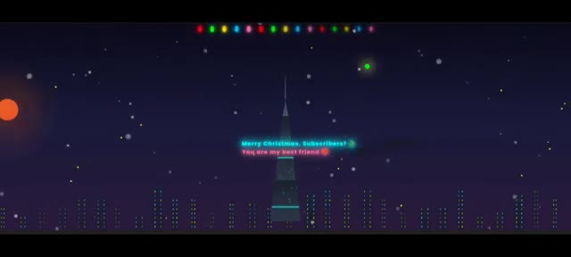
🔍 Agrandir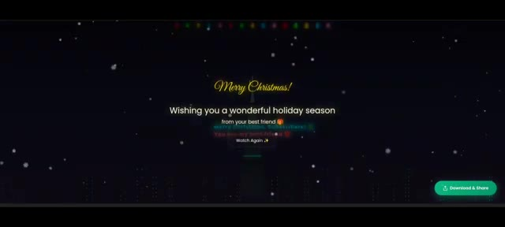
🔍 Agrandir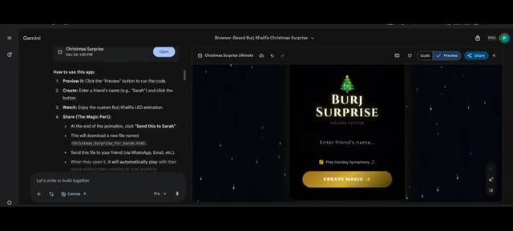
🔍 Agrandir